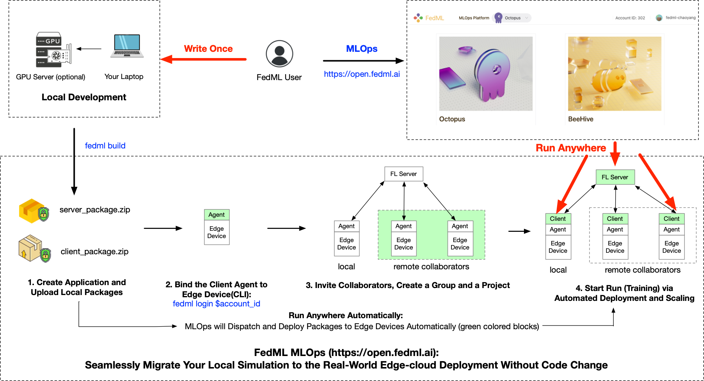
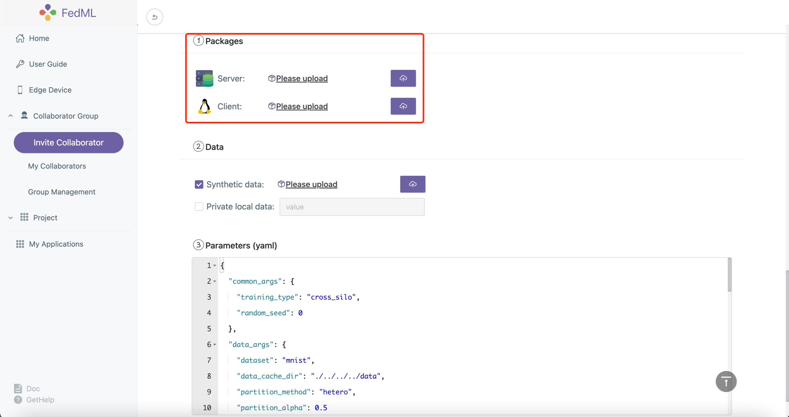
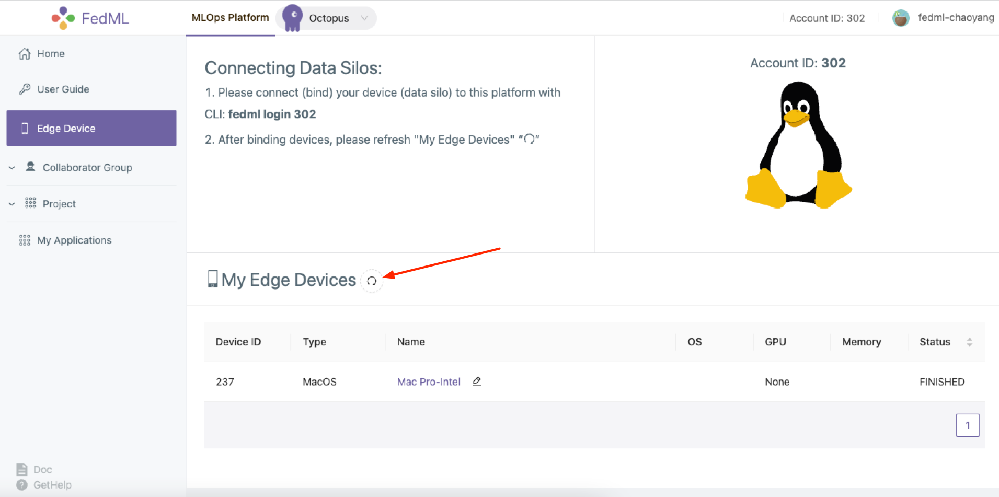
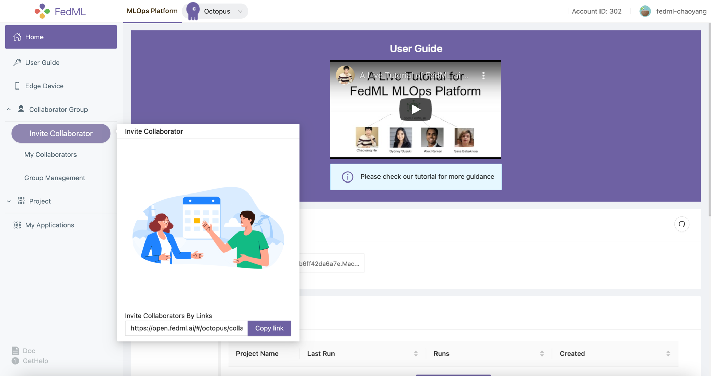
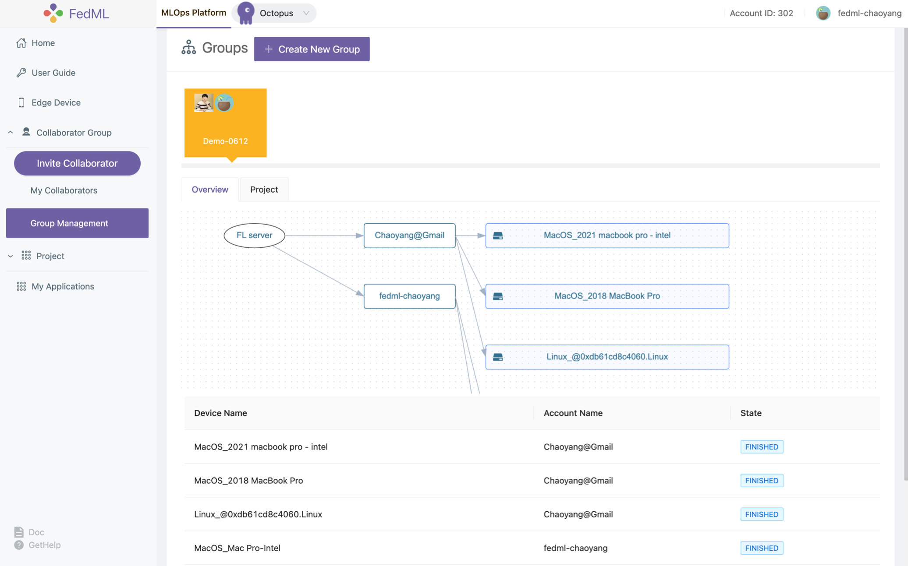
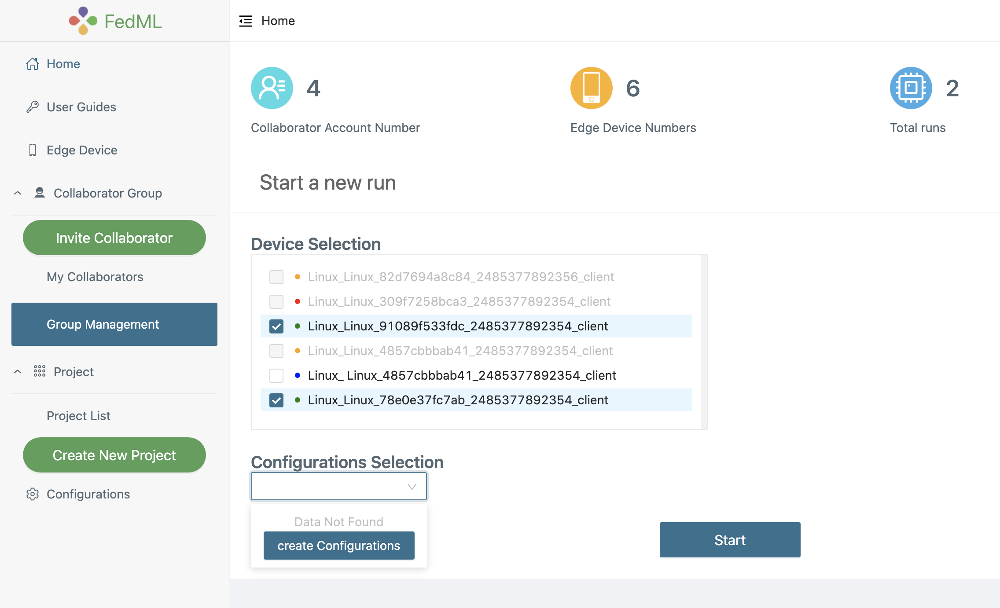
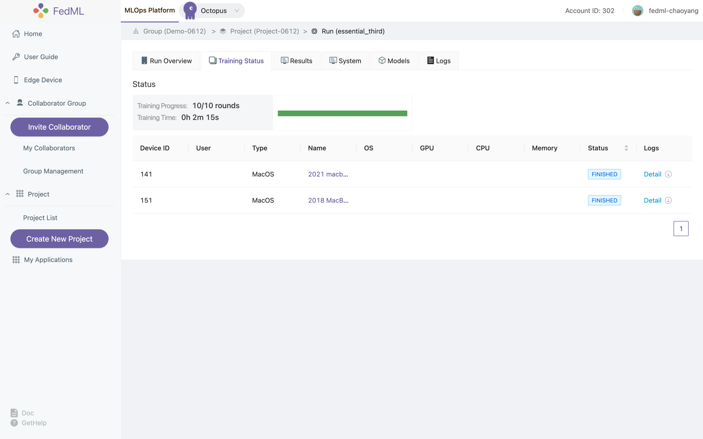
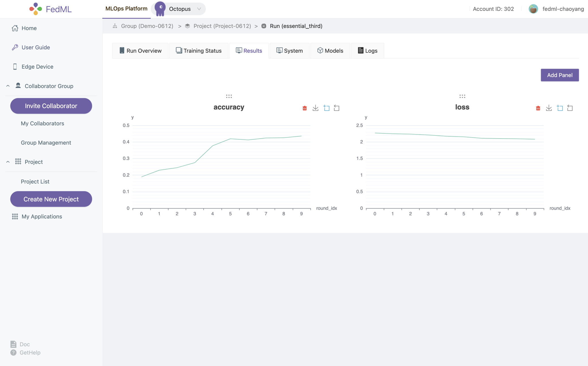
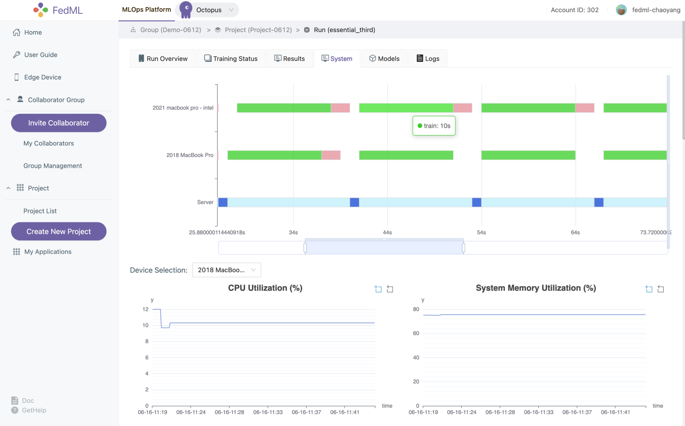
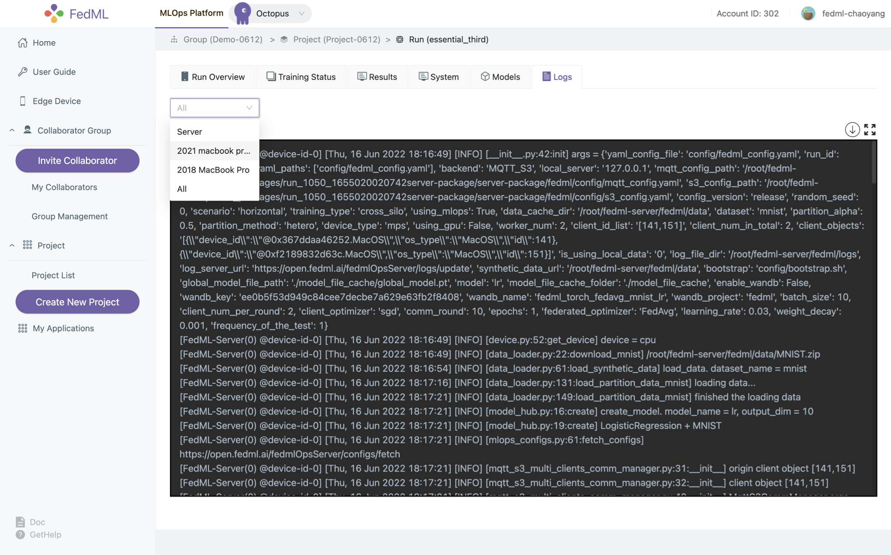

FedML MLOps User Guide¶
Video Tutorial: https://www.youtube.com/watch?v=Xgm0XEaMlVQ
Write Once, Run Anywhere: Seamlessly Migrate Your Local Development to the Real-world Edge-cloud Deployment
How Does FedML MLOps Platform Work?
Local Development and Building MLOps Packages
Create Application and Upload Local Packages
Install FedML Agent: fedml login $account_id
Invite Collaborators, Create a Group and a Project
Start Run (Training) via Automated Deployment and Scaling
Experimental Tracking via Simplified Project Management
How Does FedML MLOps Platform Work?¶

Figure 1: the workflow describing how MLOps works
MLOps works as the figure shown above. Such a workflow is handled by web UI without the need to handle complex deployment. Now please register an account and follow the following instruction step by step.
Instructions for registration:
Please open https://open.fedml.ai and find “Sign Up”.
Local Development and Building MLOps Packages¶
After you finish the local developing/debugging of the FedML project using FedML library (e.g., successfully run the example https://doc.fedml.ai/cross-silo/examples/mqtt_s3_fedavg_mnist_lr_example.html), you can now deploy it into the real-world edge-cloud system.
Next, we use the cross-silo project example at https://github.com/FedML-AI/FedML/tree/master/python/examples/cross_silo/mqtt_s3_fedavg_mnist_lr_example/one_line to guide you through how to deploy it and collaborate with others data silos.
1. Create Application and Upload Local Packages¶

You can use the following FedML CLI to build the package, and then upload the packages as shown in the figure above.
fedml build -t client -sf $SOURCE -ep $ENTRY -cf $CONFIG -df $DEST
Usage: fedml build [OPTIONS]
Commands for open.fedml.ai MLOps platform
Options:
-t, --type TEXT client or server? (value: client; server)
-sf, --source_folder TEXT the source code folder path
-ep, --entry_point TEXT the entry point of the source code
-cf, --config_folder TEXT the config folder path
-df, --dest_folder TEXT the destination package folder path
--help Show this message and exit.
The following script uses examples/cross_silo/mqtt_s3_fedavg_mnist_lr_example/one_line as an example to illustrate the arguments for building MLOps packages. Please replace related values with your own.
Build the deployable package for the client
cd python/examples/cross_silo/mqtt_s3_fedavg_mnist_lr_example/one_line
SOURCE=client
ENTRY=torch_client.py
CONFIG=config
DEST=./mlops
fedml build -t client -sf $SOURCE -ep $ENTRY -cf $CONFIG -df $DEST
Note: for ENTRY, please only specify the file name (torch_client.py) under the SOURCE folder, please do not pass the absolute path.
If the script works correctly, the console log should be as follows.
(mnn37) chaoyanghe@Chaoyangs-MBP python % fedml build -t client -sf $SOURCE -ep $ENTRY -cf $CONFIG -df $DEST
Argument for type: client
Argument for source folder: examples/cross_silo/mqtt_s3_fedavg_mnist_lr_example/one_line/client
Argument for entry point: torch_client.py
Argument for config folder: examples/cross_silo/mqtt_s3_fedavg_mnist_lr_example/one_line/config
Argument for destination package folder: ./mlops
Now, you are building the fedml packages which will be used in the MLOps platform.
The packages will be used for client training and server aggregation.
When the building process is completed, you will find the packages in the directory as follows: ./mlops/dist-packages.
Then you may upload the packages on the configuration page in the MLOps platform to start the federated learning flow.
Building...
You have finished all building process.
Now you may use ./mlops/client-package.zip to start your federated learning run.
Build the deployable package for the server
SOURCE=server
ENTRY=torch_server.py
CONFIG=config
DEST=./mlops
fedml build -t server -sf $SOURCE -ep $ENTRY -cf $CONFIG -df $DEST
Note: for ENTRY, please only specify the file name (torch_server.py) under the SOURCE folder, please do not pass the absolute path.
If the script works correctly, the console log should be as follows.
(mnn37) chaoyanghe@Chaoyangs-MBP python % fedml build -t server -sf $SOURCE -ep $ENTRY -cf $CONFIG -df $DEST
Argument for type: server
Argument for source folder: examples/cross_silo/mqtt_s3_fedavg_mnist_lr_example/one_line/server
Argument for entry point: torch_server.py
Argument for config folder: examples/cross_silo/mqtt_s3_fedavg_mnist_lr_example/one_line/config
Argument for destination package folder: ./mlops
Now, you are building the fedml packages which will be used in the MLOps platform.
The packages will be used for client training and server aggregation.
When the building process is completed, you will find the packages in the directory as follows: ./mlops/dist-packages.
Then you may upload the packages on the configuration page in the MLOps platform to start the federated learning flow.
Building...
You have finished all building process.
Now you may use ./mlops/server-package.zip to start your federated learning run.
The output package locates at mlops folder.
2. Install FedML Agent: fedml login $account_id¶
After installing the FedML library at your edge devices, you can bind it to MLOps platform with a simple CLI:
fedml login $account_id
Please change $account_id to your own (see the screenshot shown below).
 Figure 2: login your edge devices to our platform
In the edge device, you will see the log as below if the script works correctly. You can also press the “refresh” button in Figure 2 to check the status of your device.
(fedml3.7) chaoyanghe@Chaoyangs-MBP cross_silo % fedml login 302
client None, server None
login as client: True, as server: None
/Users/chaoyanghe/sourcecode/FedML_product/FedML/python/fedml/cli/edge_deployment/client_login.py
(fedml3.7) chaoyanghe@Chaoyangs-MBP cross_silo % Namespace(local_server='127.0.0.1', type='login', user='302', version='release')
Namespace(account_id=302, cloud_region='', config_version='release', current_running_dir='/Users/chaoyanghe/fedml-client', device_id='0xb6ff42da6a7e', local_server='127.0.0.1', log_file_dir='/Users/chaoyanghe/fedml-client/fedml/logs', os_name='MacOS', type='login', user=302, version='release')
Current directory of client agent: /Users/chaoyanghe/fedml-client
client ids:[266]
log file path /Users/chaoyanghe/fedml-client/fedml/logs/fedml-run-0-edge-266-upload.log
login: unique_device_id = @0xb6ff42da6a7e.MacOS
login: edge_id = 266
subscribe: flserver_agent/266/start_train
subscribe: flserver_agent/266/stop_train
subscribe: fl_client/flclient_agent_266/status
Congratulations, you have logged into the FedML MLOps platform successfully!
Your device id is @0xb6ff42da6a7e.MacOS. You may review the device in the MLOps edge device list.
3. Invite Collaborators, Create a Group and a Project¶
3.1 Invite Collaborators
(1) Copy your invitation link
(2) Send the invitation link to your collaborators via any communication tools e.g., Slack, Facebook Messenger, Email.
(3) Your collaborators can open the URL, and accept the invitation
Now you and your collaborators should be able to see each other on My Collaborators page.
 Figure 3: invite your collaborators
3.2 Group Management
After inviting your collaborators, you can Create New Group, input the group name, and select your collaborators into the group.
We support a topology visualization to assist you and your collaborators in checking all collaborative edge devices in that group.
Note that after creation, our platform will add newly bound devices from all members to the group. If you would like to change the members in this group, Please create a new group for it.
 Figure 4: showing the topology of the group
4. Start Run (Training) via Automated Deployment and Scaling¶
Now let’s create a project and get training started!
Create a new project for a specific group or utilize the existing project you created before
Open a project and create a new run under the project, by clicking
Start, the run will get started.
 Figure 5: create and start a new run
5. Experimental Tracking via Simplified Project Management¶
Now you are ready to start the training, enjoy! We provide the following experimental tracking abilities as follows.
monitoring device status (including logging in each device) and training progress 
visualizing training results 
visualizing system performance 
model downloading/serving
distributed logging 
More advanced features will be supported soon. We appreciate your valuable feedback.